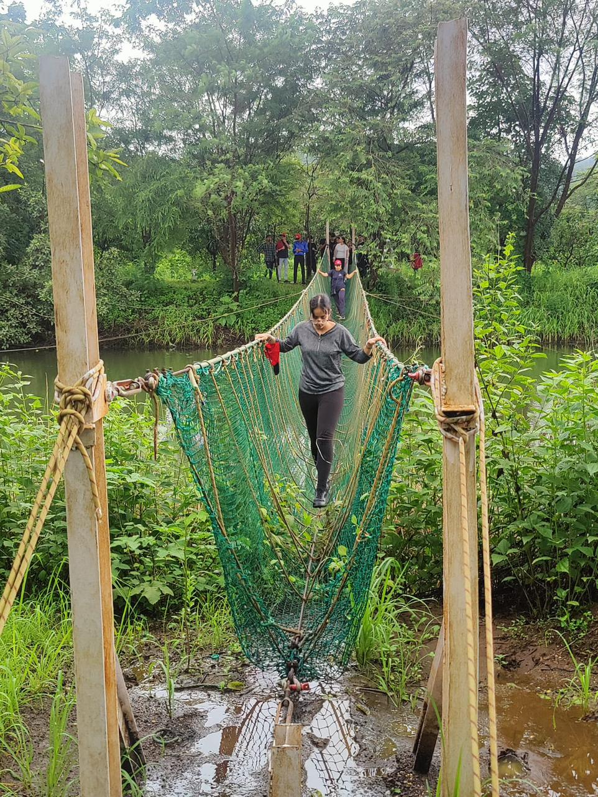
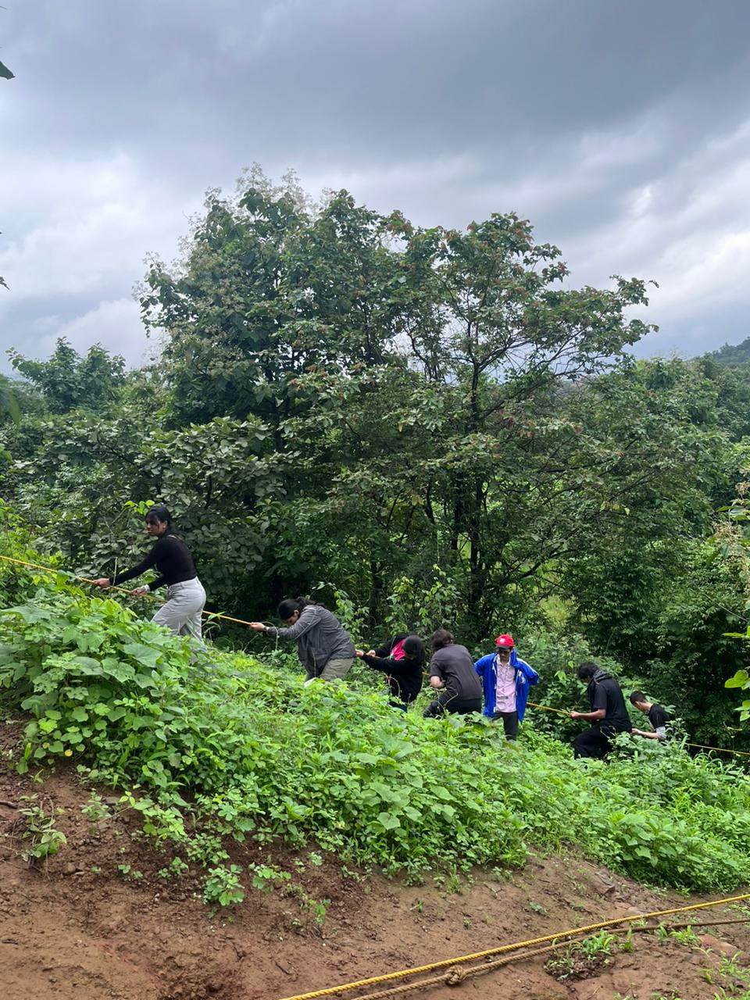

Visit to Forganic farms, Lonavla
During the beginning of August 2024, I visited the Forganic farms in Lonavla, where I practiced various strands under CAS experiences.
Creativity
Activity
Service
Learning Outcomes Achieved
Learning Outcome 2
Undertaking challenges to develop new skills
We attempted the activity of Burma Bridge in the rain, which was a challenge due to the slippery ropes. It allowed me to develop the skills of balance and physical prowess required to complete the challenge.

Learning Outcome 4
Showing commitment and perseverance
Despite slipping and getting wet in the stream, I continued on the trek during the visit, which demonstrates my perseverance in completing the CAS experience.

Evidence of experience

My Reflection
The visit to FORGANIC farm was one that helped me explore my physical capabilities and connect with nature. The primary learning outcomes that I targeted through this CAS experience were LO2 (demonstrate challenges have been undertaken, developing new skills in the process) and LO3 (Show commitment to and perseverance in CAS experience). By attempting adventure activities and trekking in the rain, I tested my ability to navigate challenging terrain. During the process, I learned about the importance of persevering even when it gets difficult to keep going. Additionally, I learned about the importance of organic vermicomposting as a means of sustainable agriculture. This encouraged me to continue thinking about creative forms of sustainable agriculture and composting methods. It will be a trip which I will remember for a very long time.